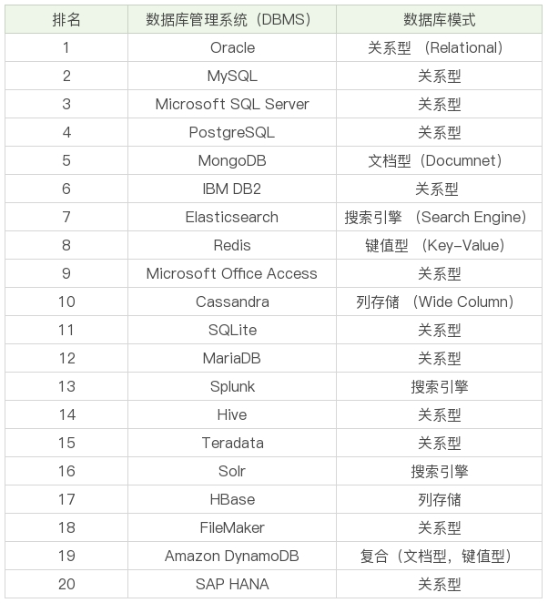

数据库，一个我们常常提到的名词，但是你有没有想过，它到底是什么意思呢，而我们常说的 MySQL、Oracle 等又到底指什么呢？
数据库（DataBase），简称 DB，是数据库是存储数据的集合，你可以把它理解为多个数据表。数据库是“按照数据结构来组织、存储和管理数据的仓库”，是一个长期存储在计算机内的、有组织的、有共享的、统一管理的数据集合。
数据库是以一定方式储存在一起、能与多个用户共享、具有尽可能小的冗余度、与应用程序彼此独立的数据集合，可视为电子化的文件柜——存储电子文件的处所，用户可以对文件中的数据进行新增、查询、更新、删除等操作。
数据库的概念实际包括两层意思：
数据库管理系统( Database Management System )是一种操纵和管理数据库的大型软件，用于建立、使用和维护数据库，简称 DBMS。它对数据库进行统一的管理和控制，以保证数据库的安全性和完整性。用户通过 DBMS访问数据库中的数据，数据库管理员也通过DBMS进行数据库的维护工作。
DBMS 可以支持多个应用程序和用户用不同的方法在同时或不同时刻去建立，修改和询问数据库。大部分 DBMS 提供数据定义语言 DDL（Data Definition Language）和数据操作语言 DML（Data Manipulation Language），供用户定义数据库的模式结构与权限约束，实现对数据的追加、删除等操作。
在生活中我们常常提到的 MySQL、Oracle 等，虽然叫的都是数据库，但其实严格意义上来说，它们应该是数据库管理系统，即 DBMS。
数据库系统（Database System），简称 DBS，是由数据库及其管理软件组成的系统。
其软件主要包括操作系统、各种宿主语言、实用程序以及数据库管理系统。数据库由数据库管理系统统一管理，数据的插入、修改和检索均要通过数据库管理系统进行。数据管理员负责创建、监控和维护整个数据库，使数据能被任何有权使用的人有效使用。数据库管理员一般是由业务水平较高、资历较深的人员担任。
DBS 是更大的概念，包括了数据库、数据库管理系统以及数据库管理人员 DBA。
那我们呢平时使用的 SQL 又是什么呢？
SQL 是一门结构化查询语言( Structured Query Language )，是一种特殊目的的编程语言，是一种数据库查询和程序设计语言，用于存取数据以及查询、更新和管理关系数据库系统。
需要注意的是，SQL 是针对关系型数据库系统，与之相对应的就是 NoSQL 的非关系数据库，如 key-value 型的 Redis、文档型的 MongoDB。
我们日常工作中使用的数据库 MySQL、Oracle 等数据库管理系统，都遵循 SQL 语言，因此，我们可以通过 SQL 来操作 DBMS。
按照功能，SQL 可以分为4个部分：
2019 年 5 月 DB-Engines 公布的 DBMS 的排名中，Oracle 与 MySQL 占据了前两位，这也是我们日常中使用较多的数据库。

1979 年 RSI（关系软件有限公司）发布了 Oracle 第二版（其实是第一版），它是它是第一个商用的 RDBMS（关系型数据库管理系统），随后被卖给了军方客户。随着 Oracle 的火热，RSI 也更名为 Oracle 公司，目前 Oracle 数据库最新版本为 Oracle Database 12c。
MySQL是 1995 年诞生的开源数据库管理系统，因为免费，广受好评。2008 年 SUN 收购了 MySQL，然而在 2010 年 SUN 又被 Oracle 收购，于是 Oracle 拥有了 MySQL 的管理权，而这也使得 Oracle 在数据库领域中成为绝对的领导者。
在 Oracle 收购 MySQL 的同时，MySQL 的创造者担心 MySQL 有闭源的风险，因此创建了 MySQL 的分支项目 MariaDB，MariaDB 在绝大部分情况下都是与 MySQL 兼容的，并且增加了许多新的特性，比如支持更多的存储引擎类型。
Oracle是商业数据库，费用不菲，而 MySQL 作为开源软件，则是基本免费的，因而很多企业选择使用 MySQL，尤其在中国，因为阿里的带动，更是推动了 MySQL 的发展。